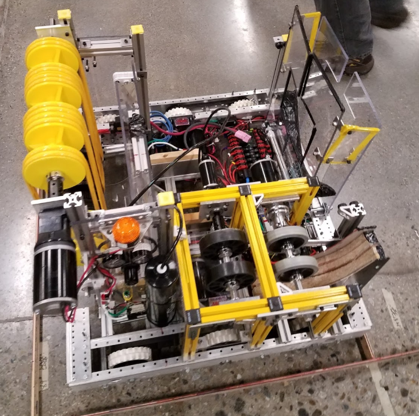

- Team Website
- Summary
- Goals
- Hardware
- Code
- Community Impact
- Lessons Learned
- Media
FIRST Robotics Team 5962
Fall 2015- Summer 2018

Summary
Being a part of this team was by far THE MOST time-consuming and high-commitment parts of my career thus far. For those unfamiliar with FIRST Robotics, it is an international robotics competition for high school students. After being given a challenge in early January, teams have 6-weeks to design, build, and program an 120lb robot to compete against other teams. After that, there is a six week regional and district competition period, where you work together with and compete against ~40 teams in the area. If you are successful, you might earn yourself a spot at the regional championship, and then a spot the world championship.
During build-season, it would be fair of me to say I put 40+ hours into the team, whether it was manufacturing parts, CAD work, administrative tasks, electrical work, or project management, my life was pretty much consumed by robotics. Needless to say, it was A LOT, but I honestly thrived off of the busy days and tight schedules, and wouldn't have had it any other way.
This is not to say that being a part of a FIRST team is 3 month experience. The team also worked year-round to build a foundation for STEM in the community. As a part of that goal, I assisted in the formation and mentoring of four FIRST Lego League Jr. Teams. I also founded an event at UMass Lowell that is dedicated to encouraging girls to get involved in STEM through hands on projects and interaction with female engineers from local companies and UML's SWE chapter. Throughout the years I have also been involved in various other outreach events throughout the community.
Goals
When joining this team, I mostly just had the goal of building things. I had no idea, however, how much was actually possible. I found that I was able to take this opportunity as an opportunity to lead and also develop my teamwork skills, while at the same time becoming more technically advanced in many of the skills I can use later in my career.
Electrical
When I first joined the team, I joined as the electrical lead. Having worked with basic circuits and at-home projects at home with my dad for years, I was excited to be in charge of the electrical system of our robot. This was also my first deep dive into leadership on the team.
The electrical system on the robot can be as complex as you want it to be, but always must follow the very specific standards set up by FIRST. The core components on every robot is also is always the same: roboRIO, power distribution panel, 12V battery, breakers, motor controllers, motors, etc. However, you are allowed to get creative with sensors, cameras, additional microprocessors, and gearboxes.
One of my biggest contributions to the electrical team was doing the motor calculations for all of our lifting and our drivetrain. Keeping in mind the limits of the rules, I was responsible for finding the optimal motors, gearboxes, pulley sizes, and configuration for all the motors on the robot. When trying to lift things or move slides, this required understanding the torgue and forces necessary to move such systems. In fact all three years there were opportunities to make the entire 120lb robot lift itself up a rope or bar. For these instances, a huge amount of work had to go into not only picking a strong enough motor or gearbox, but also a proper ratcheting system.

Besides motor calculations, I was also in charge of all circuits on the robot and making sure they were all up to standards, and more importantly, met all deadlines. Being a part of electrical was particularly interesting because I was at the junction of the mechanical system and the programming team. All prototyping had to go through me in order to have moving parts. In another respect, being able to understand and communicate the needs of both mechanical and software was crucial to success. As time went on, my ability to do this effectiviely improved.

Mechanical

In our first year, as a rookie team, all of our mechanical systems were extremely basic and required little modeling, as there was plenty of empirical data from elsewhere proving them to be successful. However in 2017, with the desire to create more advanced systems and custom parts, I realized we would need to use CAD. Quickly, I dove into Solidworks, using it at first to just make small 3D printed brackets and motor adapters. However, I kinda got hooked on CAD and within a month, I had modelled the entire robot.
At the same time, I also realized my computer was not powerful enough to handle the big assemblies in Solidworks, so I also gained proficiency in Autodesk Inventor. (to be honest, I'm not sure why Inventor worked and Solidworks didn't but whatever) As my team began to see the benefits of CAD before manufacturing, I became a CAD monkey for team on top of my other responsibilities. At the same time, the team also got more interested in 3D printed parts. Because I have a 3D printer at home, I designed and printed dozens of gears, rollers, brackets, and covers for the next two years.

CAD and 3D printing became a huge part of my role on the team as Captain in 2017-2018 as well. This time, we started CAD early, and with the intention of creating a much more complex robot, we modelled the whole robot very early in the season. This modelling was crucial as we moved forward and could see where new mechanisms would and wouldn't fit.
Media